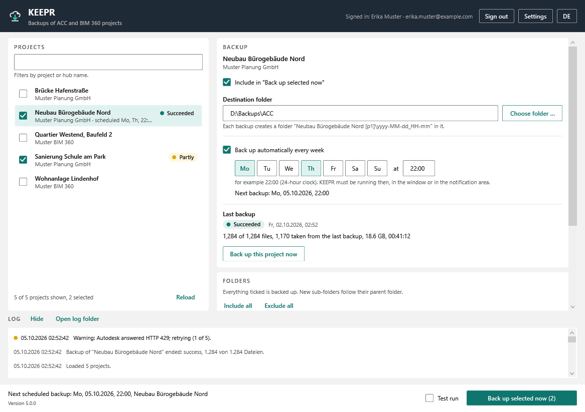
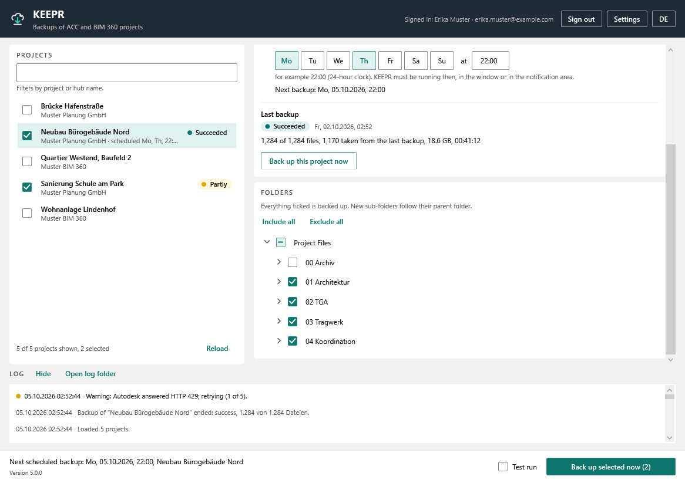
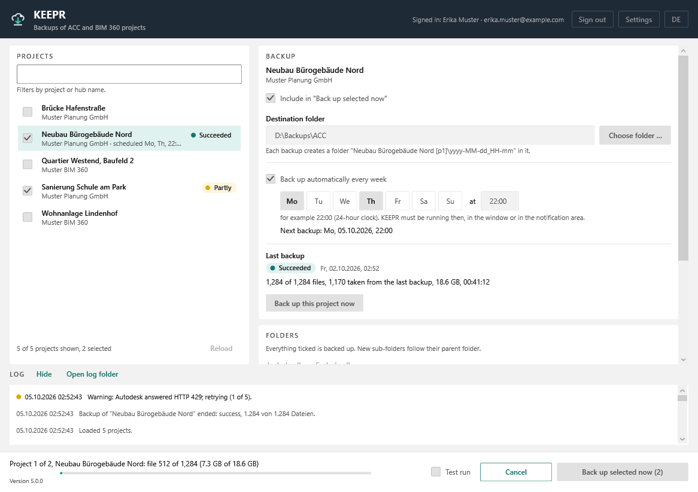
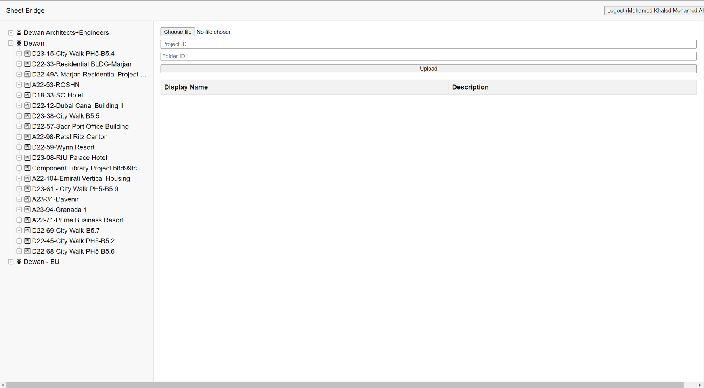

ACC Integrations
Cloud-hosted does not mean backed up.
- C#
- .NET 8
- WPF
- Autodesk Platform Services (PKCE)
- Data Management API
The problem
Projects in Autodesk Construction Cloud feel safe because they live in the cloud. A deleted folder or an ended subscription can still take years of work with it.
What it does
KEEPR keeps dated local copies of Autodesk Construction Cloud and BIM 360 projects. Pick projects and folders, a destination and a weekly time; KEEPR downloads the latest version of every document and keeps the last few backups. Version 5 (2026) is a full rewrite with a German and English interface.
Incremental by hard links. A document unchanged since the previous backup is linked instead of downloaded again, so later runs are fast and five kept backups do not take five times the space. A run only becomes a backup once its manifest is written, so a crash or power cut never leaves a half-finished folder that looks complete.
Sign-in uses PKCE, so no client secret ships with the program. A scheduled backup missed while KEEPR was closed runs at the next start, and a failed one is retried after 15 minutes, 1 hour and 4 hours.
Sheet Bridge is a web application for bulk-editing ACC and BIM 360 sheet attributes, replacing a slow one-at-a-time process in the web UI.
See it
Screenshots & demos



